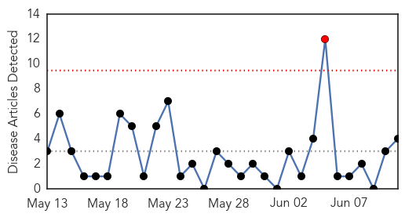
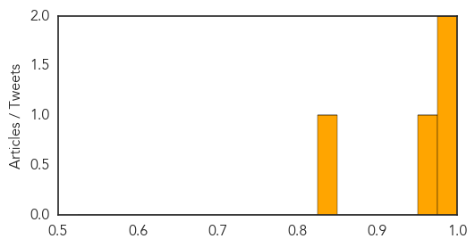
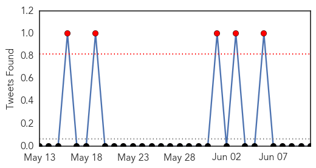
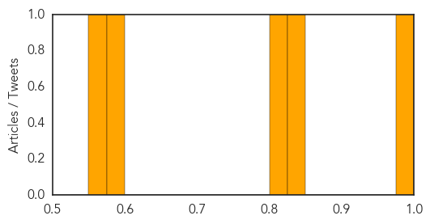

Dengue Fever
30-Day Web Trend
1 alerts, 0 warnings

30-Day Twitter Trend
2 alerts, 0 warnings

Article Locations
Article Confidences
Top Articles:
Top Tweets:
-
No tweets found for Jun 11, 2014
Cholera
30-Day Web Trend
18 alerts, 5 warnings

30-Day Twitter Trend
0 alerts, 0 warnings

Article Locations
Article Confidences
Top Articles:
- 0.989
- South Sudan reports nearly 1,500 cholera cases
- 0.831
- South Sudanese Refugees in Ethiopia: A Dire Situation, an Insufficient Response
- 0.812
- After six months of conflict, South Sudan faces a threat more dire than the violence itself - South Sudan
- 0.592
- Haiti's Chief Foreign Import: Meddling
- 0.552
- Cholera in Juba: "I Hope My Son Will Get Better"
Top Tweets:
-
No tweets found for Jun 11, 2014